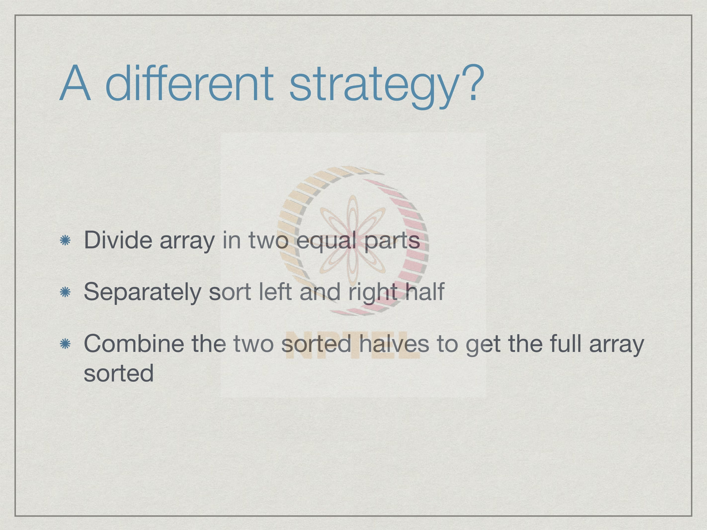

Week 4
4.1 MergeSort
Last week, we saw two simple sorting algorithms, selection sort and insertion sort. These were attractive, because they corresponded to the manual way in which we would sort items by hand. On the other hand, we analyzed these to see that the worst case complexity is order n squared where n is the length of the input list to be sorted. And unfortunately, n squared sorting algorithms are infeasible for n over about 5000, because it will just take too long and on the other hand, 5000 is the rather small number when we are dealing with real data.
Let us examine a different strategy all together. Suppose we had the example where you were teaching assistant and you were supposed to sort the answer papers for the instructor and supposing the instructor had not one teaching assistant, but two teaching assistants. And the job is distributed to the two teaching assistants, so each one is told to go with halves the papers, sort them separately and come back and then the instructor has to put these two lists together. In other words, you divide the array initially, the unsorted array or list into two parts and then you hand over these two parts to two different people or two different programs if you want to sort. So, you sort these two halves separately and now the key is to be able to combine these two sorted things efficiently in a single sorted list.
Let us focus on the last part, how we combine two sorted lists into a single sorted list. Now this is again something that you would do quite naturally. Supposing you have the two outputs from the two teaching assistants then what you would do is you would examine of course, the top paper in both. Now, this top paper on the left hand side is the highest mark on the left hand side. The top paper on the right hand side is the highest mark on the right hand side. The maximum among these two is a top overall. So, you could take the maximum say this one and move it aside. Now you have the second highest on the right hand side and the first the highest on the left hand side. Again, you look at the bigger one and move that one here and so on. So, at each time, you look at the current head or top of each of the lists and move the bigger one to the output, right. And if you keep repeating this until all the elements are over, you will have merged them preserving the sorted order overall.
Let us examine how this will work in a simple example here. So, we have two sorted lists 32, 74, 89 and 21, 55, 64. So, we start from the left and we examine these two elements initially and pick the smaller of the two because we are sorting in ascending order. So, we pick the smaller of the two that is 21 and now the second list has reduced the two elements. At the next step, we will examine the first element in the first list and the second element in the second list because that is what is left. Among these two 32 is smaller, so we will move 32. Now 55 is the smaller of the two at the end, now 64 is the smaller of the two at the end. Notice we have reached the situation where the second list is empty, so since the second list is empty we can just copy the first list as it is without having to compare anything because those are all the remaining elements that need to be merged.
Having done this, now that we have a procedure to merge two-sorted list into a singlesorted list; we can now clarify exactly what we mean by merging the things using merge sort. So, merge sort is this algorithm which divides the list into two parts and then combines the sorted halves into a single part. So, what we do is we first sort the left hand side. So, we take the positions from 0 to n by 2 minus 1 where n is the length. This is left and this is the right. Now one thing to note is in python notation, we use the same subscript here and here, because this takes us to the position n by 2 minus 1 and this will start at n by 2. So, we will not miss anything nor will we duplicate anything, so it is very convenient. This is another reason why python has its convention that the right hand side of a slice goes up to the slice minus 1. If we write something like this we do not have to worry about whether we have to do plus 1, minus 1, we can just duplicate the index of the right hand side and the left hand side and it will correctly span the entire list. So, what we do is this is a naturally recursive algorithm; we recursively use this algorithm to sort the first half and the second half and then we merge these two sorted halves into the output. The important thing is we keep repeatedly doing the same thing; we keep halving, sort the half, sort the other half and merge and when do we reach a base case where when we reach a list which has only one element or zero elements there is nothing to sort. When such a situation, we can just return the list as it is and then rely on merging to go ahead.
Once again let us look at an illustrative example. Supposing, we have eight items to sort
which are organized like this. The first step is dividing it into two and sort each
separately. So, we divide it into two groups; we have the left half and the right half. Now
these are still things, which we do not know how to sort directly, so again we divide into
two. The left half gets divided into two further subdivisions and so does the right.
Now we have list of length two, we could sort them by hand, but we say that we do not
know how to sort anything except a list of length 1 or 0, so we further break it up. Now,
we have trivial lists 43 and 32 on the left, 22 78 and so on, so we end up with eight lists
of length one which are automatically sorted.
At this stage, the recursion comes back and says, you have sorted the sub list 43 for
example, this list we have sorted the left into 43 and the right into 32 in a trivial way, so
we need to combine them by merging. So, we merge 43 and 32 by applying a merge
procedure and we get 32 before 43 when we merge 22 and 78 they remain in the same
order. Here 57 come before 63 and finally, 13 comes before 91.
Now, at this level, we have two lists of lengths two which are sorted and so they must be
merged and similarly here we have two lists of lengths two which are sorted and they
must be merged. So, we merge the first pair, we get 22 followed by 32, followed by 43,
followed by 78. And similarly, here we get 13 followed by 57 followed by 63 followed
by 91. So, after doing these two merges we have now two lists of length four each of
which are sorted. And now we will end up picking from this 13 and then so this is 13 and
then we will pick 22 then we pick 32 and then we pick 43 then 57, then 63, then 78 and
then 91 right. This is how this recursion goes, you first keep breaking it up, down till the
base case and then you keep combining backwards using the merge.
This strategy that we just outlined from merge sort is a general paradigm called divide and conquer. So, if you have a problem where you can break the problem up into sub problems, which do not have any interference with each other. So, here for instance, sorting the first half of the list and sorting the second half of the list can be done independently. You can take the papers assigned by the instructor, give them to two separate teaching assistants, ask them to go to two separate rooms; they do not need to communicate with each other to finish sorting their halves. In such a situation, you break up the problem into independent sub problems and then you have efficient way to combine the solved sub problems. So that is the key there, how efficiently you can combine the problems. If you takes you a very long time to combine the problems then it is not going to help you at all. But, if you can do it in a simple way like this merge sort where we do the merging by just scanning the two lists from beginning to end and assigning each one of them to the final thing as we see it, then you can actually derive a lot of benefit from divide and conquer.
Let us look a little more in detail at the actual algorithmic aspect of how we are going to do this. First, since we looked at merging as the basic procedure, how do we merge two sorted list. As a base case, if either of them is empty as we saw in the example, we do not need to do anything; we just copy the other one. So, we are taking two input lists A and B, which are both sorted and we are trying to return a sorted list C. So, if A is empty, we just copy B into C; if B is empty, we just copy A into C. Otherwise, what we do is if both are not empty, so we want to take the smaller one of the head of A and the head of B and move that to C, because that will be the smallest one overall in what is remaining. So, we compare the first element of A and B and we move the smaller one into C and we keep repeating this until all the elements in A and B has been moved.
This is a python implementation of this merge function in general the two lists need not
be the same length. So, we are merging A of length m and B of length n into an output
list of length C. Initially, we set up m and n, because we need to keep track of how many
elements we have moved in order to decide when to terminate. So, we set up m and n to
point to the lengths of A and B respectively and we initialize the output list to be the
empty list, because remember that in python the type of C will only be known after it is
assigned a value. So, we need to tell it that initially the output merge list is an empty list,
so that we can then use append to keep adding items to it.
Now what we are going to do is essentially start from the left hand side of both A and B,
so we are going to start here and walk to the right; as we go long we are going to move
one of the two elements. So, we need an index to point here, so we use the index i and j
to point into A and B respectively.
And initially, these indices point to the starting element which is 0. So, as we move along
if we move i from 0 to 1 that means, we have processed one element in A; if we move it
to 3; we have processed three elements in A and so on. So, at any given time i plus j will
tell us how many elements have been moved so far to the output; eventually, everything
in A and everything in B must be moved to the output. This will go on so long as i plus j
is not reached the total m plus n which was the total number of elements we had to move
to begin with.
While i plus j is less than m plus n, we have to look at different cases. The first two cases
are where one of the two lists is empty; either we have reached the end of A, so i has
actually reached. So, remember the indices go from 0 to m minus 1 and 1 to n minus 1.
So, if i has actually gone to m; that means, that we have exhausted the elements in A. So,
we append the next element in B and we keep going by incrementing the pointer in B or
the index in B.
Similarly, if we have reached the end of B, we append the next element A and we go
back. Now remember that at this point because i plus j is less than m plus n, if we have
finished m elements, but m plus n is not been reached, there must be some element in B.
Similarly, if we have finished I mean we have finished n elements in B, but i plus j is not
yet m plus n, there must be at least one element left in it. These two things will definitely
work just by checking the fact that we have not finished all the elements, but one of the
lists is exhausted.
Now, if neither list is exhausted then we have to do a comparison. So, we come to this
case and we check whether the element in A is smaller than or equal to the element in B.
So, at this point we are in general looking at some A i and some B j. So, we have to
decide which of these two goes into C next. The smaller of the two if it comes in A, we
append that to C at the increment i pointer; otherwise, we append the B value increment
the j pointer. At the end of this loop, what we would have done is to have transferred m
plus n elements in the correct order from A and B into C.
Let us just verify that this code that we have described works in python as we expect. So,
here is a file merge dot py in which we had exactly the same code as we had on the slide.
So, you can check that the code is exactly the same it goes through this loop while i plus
j is less than m plus n and it checks the four cases an according to that copy is either in
element from A to C, or B to C and finally returns the list C.
The simplest way to do this is to try and construct two lists; suppose, we take a list of
numbers where the even numbers from 0 to 100. So, we start at 0 and go to 100 in steps
of 2. And we might take the odd numbers from say 1 to 75, so we do not have the same
length here right. The length of a is 50, the length of b is 37. And a has it's in ascending
order 0 to 98 in steps of 2; B is 1 to 73 in steps of 1 and in steps of 2 again.
Now if we say merge a, b, and then we get something which actually returns this merge
list. Notice that up to 73, which is the last element in b, we get all the numbers. And then
from here, we get only the even numbers because we are only copying from a. And if
you want to check the length of the merge list then it is correctly 37 plus 50 is 87.
If we go back and look at this code again, then it appears as though we have duplicated the code in a couple of places. So, we have two situations case 1 and case 4 where we are appending the element from B into C and we are incrementing j. And similarly, we have two different situations - case 2 and case 3, where we are appending the element from A into C and then incrementing i. So, it is tempting to argue that we would have a more compact version of this algorithm, if we combine these cases.
If we combine these cases then we can combine case 1 and 4. Remember one and four
are the ones where we take the value from B. So, we combine 1 and 4 and say either if A
is empty or if B has a smaller value then you take the value from B and append it to C
and say j equal to j plus 1.
On the other hand, either if B is empty or A has a smaller value then you take the value
from A and append the index in that right. Let us see what happens if we try to run this
code.
Here we have a file merge wrong dot py, the name suggests that is going to be a problem,
where we have combined case 1 and 4, where we append the element from B into C and
2 and 3 where we combine the element append the element from A into C. Let us run this
and see. Now, we take merge wrong at the starting point.
And let us just do a simple case. Supposing we take a as 2, 4, 6 and b as 1, 3, 5 then we
have to expect 1, 2, 3, 4, 5, 6. Let us try to merge a and b right and now we get an error
which says that we have a list index out of range. List index out of range suggests that
we are trying to access some element which is not present and it so happens that this is in
the case if i equal to m or a i equal to b j, greater than b j. Let us see if we can diagnose
what is going on.
One simple way of diagnosing what is going on is to just insert some statements to
printout the values of the names at some appropriate point. Now here since we are
having an error at inside the while loop, what we have done is we have added the
statement print which as I said we have not formally seen we will see it in the next week.
But it does the intuitive thing it take the names m, n, i and j and prints them out in that
sequence on the screen, so that we can see what is happening. Let us now run this again.
So, we run the interpreter load this updated version of merge wrong.
Setup a and b as before. So, a is 2, 4, 6; b is 1 3 5. And now we run merge. And now we
see what is happening. So, m and n are the initial lengths 3 and 3. And these are the
values 0 and 0 are i and j the pointers. So, j becomes 1 then i become 1 and so on.
At this point, this is where the problem is right. What we have found is that if i is equal
to n or a i greater than b j, so i is not equal to m. So, i is not yet 3, so then it is trying to
check whether a i is bigger than b j, but at this point unfortunately j is n. If we had had
these cases in order we would have first checked if i is 3 then if j is 3 and only if neither
of them are 3 would be a try to compare them. Because now we are only checking if i is
3, since i is not 3 we are going at and checking the value at a i against b j, but
unfortunately j has become 3 already and we have not checked it yet.
By combining these two cases, we have allowed a situation where we are trying to
compare a i and b j where one of them is a valid index and the other is not a valid index.
Although it looks tempting to combine these two cases one has to be careful when doing
so especially when we have these boundary conditions when we are indexing list, we
must make sure that the index we are trying to get to is a valid index. And sometimes it is
implicit and sometimes we have to be careful and this is one of those cases where you
have to be careful and not optimize these things.
Otherwise, we have to have a separate condition saying if i is equal to m or j is less than
n and which becomes more complicated than the version we had with four explicit cases.
So, we may as well go back to the version with four explicit cases.

Now that we have seen how to merge the list, let us sort them. So, what we want to do is take a list of elements A and sort it into an output list B. So, if n is 1 or 0 actually, so if it is empty or it has got length 1, we have nothing to do; otherwise, we will sort the first half into a new list L and sort the second half into a new list R. L for left and R for right. And then we will apply the earlier merge function to obtain the output list B. This is a very simple function except that we are going to be sorting different segments or slices of our list. So, we will actually have merge sort within input list and the left and right endpoints of the slice to be sorted. If the slice of length 1 or 0 then we just return the slice as it is. It is important that we have to return that part of the slice and not the entire part A, because they are only sorting.
This is a very simple funtion except that we are going to be sorting different segments or slices of our list. So, we actually have merge sort within input list and the left and right endpoints of the slice to be sorted. If the slice of length 1 or 0 then we just return the slice as it is.It is important that we have to return that part of slice and not the entire part A, because they re only sorting.
Remember when we broke up something into two parts, for example, right, so then at
this point we have to return the sorted version of this slice, not the entire slice. So, we
have to return A from left to right if it is a base case; otherwise, we find the midpoint
then we sort recursively sort the portion from the left hand side of the current slice to the
midpoint, we put it in L. Then we take the midpoint to the right, put it in R and we use
our earlier function merge to get a sorted list out of these two parts L and R and return
this. This is a very straight forward implementation; there are no tricks or pitfalls here.
The only thing to remember is that we have to augment our merge sort function with
these two things, the left point and the right point. We had a similar thing if you
remember for binary search, where we recursively kept having the interval to search. So,
we have to keep telling it in which interval we are searching.
Check the video lecture part for more clarity
Let us look at a python implementation of merge sort. So, here we have a file merge sort
dot py. We start with the function merge, which we saw before with a four way case split
in order to shift elements from A and B to C.
And then we add at the bottom of the file, the new function merge sort which we saw on
the previous slide which takes a slice of A from left to right and sorts it. If it is a trivial
slice, it returns the slice as it is. Otherwise, it breaks it into two parts and recursively
sorts that. Let us see how this would actually run.
We take python and we say from merge sort, import all the functions. And now let us
take a larger range. Suppose, if we take all the odd numbers followed by all the even
numbers. So, we say range 1 to 100 in steps of 2. Those are the odd numbers and then all
the even numbers in the same range say. So, A has now odd numbers followed by even
numbers. You would imagine that if I sort this from 0 to the length of A, then you get the
numbers sorted in sequence.
Now what if I take a larger list 1000 then I get, again everything sorted.
Now our claim is that this is an order n log n algorithm. It should work well for even
bigger list. If I say 10000 which remember would take a very long time with insertion
sort or selection sort.
Question is how long it takes here and it comes out quite fast.
We can go further and say 100000 for example, and even here it comes reasonably fast.
So, we can see that we are really greatly expanded the range of lists that we can sort
when moving to n log n algorithm because now merge sort can handle things which are
100 times larger 100,000 as suppose to a few 1000 then insertion sort or selection sort.
Another small point to keep in mind is notice that we did not run it to its recursion limit
problem that we had with the insertion sort which we defined recursively. There for each
element in the list, we were making a recursive call. If we had 1000 elements, we have
making a 1000 recursive calls and then we have to increase the limit.
Now here even for 100,000 we do not have the problem and the reason is that the
recursive calls here are not one per element, but one per half the list. So, we are only
making log n recursive calls. So, 100,000 elements also requires only log 100,000.
Remember a log 1000 is about 10. So, we are making less than 20 recursive calls, so we
do not have a problem with the recursion limit, we do not have any pending recursions of
that depth in this function.
We have seen merge sort in action and we have claimed without any argument that is
actually order n log n and demonstrated that it works for inputs of size 100,000. In the
next lecture, we will actually calculate why merge sort is order n log n.
4.2 Mergesort analysis
In the last lecture we looked at Merge Sort and we informally claimed that it was much more efficient than insertion sort or selection sort and we claimed also that it operates in time order n log n.
Recall that merge sort as its base a merging algorithm which takes two sorted lists, A and B and combines them one at a time by doing a scan over all elements.
In order to analyze merge sort, the first thing we need to do is to give an analysis of the
merge function itself. How much time does merge take in terms of the input sizes of the
two lists, A and B. So, suppose A has m elements and B has n elements and we want to
put all these elements together into a single sorted list in C. Remember that we had an
iteration where in each step of the iteration we looked at, the first element in A and B and
move the smaller of the two to C. So clearly C grows by one element with each iteration
and since we have to move all m plus n elements from A and B to C, the size of C is m
plus n.
What do we do in each iteration? Well we do a comparison and then, we do an
assignment and then, we increment some indices. So, this is a fixed number of
operations. So, it is a constant. So, the total amount of work is proportional to m plus n.
Notice that m plus n is at most twice the maximum of m plus n. So, m is 7 and n is 15,
then 5 plus 7 plus 15 will be less than two times 15.
We can say that merge as a function takes time of the order of maximum of m and n and
in particular very often like in merge sort, we are taking two lists of roughly the same
size like we divide a list into two halves and then, we merge them. If both m and n are of
the same, approximately the same size, then the max of m and n is just one of them in
itself. Essentially merge is linear in the size of the input list.
Now, having analyzed merge, let us look at merge sort. So, merge sort says that if a list is small, has zero or one elements, nothing is to be done. Otherwise you have to solve the problem for two half lists and then, merge them.
As with any recursive function, we have to describe the time taken by such a function in terms of a recurrence. So, let us assume for now since we are going to keep dividing by 2 that we can keep dividing by 2 without getting an odd number in between. Let us assume that the input n is some perfect power of 2. It is n is 2 to the k. When we breakup merge sort into two lists, we have two lists of size n by 2. The time taken for n elements is two times time taken for two list of n by 2 and this is the merge component. We have an order n step requires us to merge two lists of size n by 2 and remember we just said that merge is linear in the size of the input. So, we have two sub problems of size n by 2, that is two times n by 2 and we have merging which requires order n. As with binary search and with recursive insertion sort, we can solve this recurrence by unwinding it.
We start with the base case. If we have a list of size 1, then we have nothing to do. So, T
of n is 1 and T of n in general is two times T n by 2 plus n. If we expand this out, we read
substitute for T n by 2 and we get two times T n by 4 plus n by 2 because that if we take
this as a new input, this expands using the same definition and if we rewrite this. So, we
write two times 2 as 2 square and we write this 4 as two squared. We will find that this is
equivalent to writing it in this form 2 into 2, 2 squared T n by 2 square and now notice
that you have two times n by 2 over here. This 2 and this 2 will cancel. So, we have one
factor n and the other factor of n. The important thing is that you have 2 here in the
exponent and you have 2 here before the n.
Now, like wise what we will do in the next step is to expand this two times T n by 4. So,
we expand two times T n by 4 and that will give us another n by 8 which you write as n 2
cube which used to be 2 squared 2 n by 2 square plus 2 n will turn out to be 2 cubed 2 n
by 2 cube plus 3 n. So, notice that the two’s have become threes uniformly. So, in this
way if we keep going after k steps or j steps, we will have 2 to the j times T n by 2 to the
j plus j times n. Now, how long do we keep doing this? We keep doing this till we hit the
base case. So, when j is log of n, where log by log we usually mean log to the base 2,
then n by 2 to the j will be 1. So, T by T of n by 2 to the j will also be 1.
After log n steps, this expression simplifies to 2 to the log n plus log n times n
everywhere we have a j, we put a log n and take this has become 1, so it has disappeared.
We have 2 to the j is 2 to the log n plus this j has log n and then, we have n and this is 2
to the log n by definition is just n. So, 2 to the log n is n and we have n log n and by our
rule that we keep the higher term when we do, we go n log n is bigger than n. We get a
final value of O n log n for merge sort.
Merge turns out to be a very useful operation. What we saw was to combine two lists
faithfully into a single sorted list inparticular our list if we had duplicates. So, if we
merge say 1, 3 and 2, 3, then we end up with the list of the form 1, 2, 3, 3. This is how
merge would work. It does not lose any information. It keeps duplicates and faithfully
copies into the final list.
On the other hand, we might want to have a situation where we want the union. We do
not want to keep multiple copies and we want to only keep single copy. In the union case
here is what we would do. Let us assume that we have two lists and in general, we could
have already duplicates within the lists. Let us suppose that we have 1, 2, 2, 6 and 2, 3, 5
then we do the normal merge. So, we move one here and now, when we hit two elements
which are equal, right then we need to basically scan till we finish this equal thing and
copy one copy of it and then finally, we will put 3 and then, 5 and then 6.
When A and A i is equal to B j will increment both sides and make sure that we go to the
end of that block. The other option is to do intersection. Supposing we want to take 1, 2,
6 and 2, 6, 8 and come out with the answer 2, 6 as the common elements, then if one side
is smaller than the other side, we can skip that element because it is not there in both
lists. So, if A i is less than B j we increment i, if B j is less than A i, we increment j and if
they are equal we will take union, we keep one copy of the common element.
So, merge can be used to implement various combinations, combination operations on
this. It can be used to take the union of two lists and discard duplicates. It can be used to
take the intersection of two lists and finally, as an exercise to test that you understand it
and see if you can use merge to do list difference.
List difference is a following operation. If I have say 1, 2, 3, 6 and I have 2, 4, 6, 8 then
this difference is all the elements in the first list which are not there in the second list.
Two is there here and it is here, you remove 2, 6 is there here and here remove 2. So, you
should get 1, 3. So, if this is A, and this is B, then this is so-called list difference A minus
B. So, see if you can write a version of merge which gives you all the elements in A
which are not also in B, also known as list difference.
Now, merge sort is clearly superior to insertion sort and selection sort because it is order
n log n, it can handle lists as we saw of size 100,000 as opposed to a few thousand, but it
does not mean that merge sort does not have limitations. One of the limitations of merge
sort is that we are forced to create a new array, every time we merge two lists. There is
no obvious way to efficiently merge two lists without creating a new list. So, there is a
penalty in terms of extra storage. We have to double this space that we use when we start
with lists and we want to sort it within merge sort.
The other problem with merge sort is that it is inherently recursive and so, merge sort
calls itself on the first half and the second half. Now, this is conceptually very nice. We
saw that recursive definitions rec recursive functions are very naturally related to
inductive definitions and they help us to understand the structure of a problem in terms
of smaller problems of the same type.
Now, unfortunately a recursive call in a programming language involves suspending the
current function, doing a new computation and then, restoring the values that we had
suspended for the current function. So, if we currently had values for local names like i,
j, k, we have to store them somewhere and then, retreat them and continue with the old
values when the recursive call is done. This requires a certain amount of extra work.
Recursive calls and returns turn out to be expensive on their own time limits. So, it could
be nice if we could have both the order n log n behavior of merge sort. And we could do
away with this recursive thing, but this is only a minor comment. But conceptually merge
sort is the basic order n log n sorting algorithm and it is very useful to know because it
plays a role in many other things indirectly or directly.
4.3 Quicksort
We saw that merge sort is an order n log n sorting algorithm.
But it has a couple of deficiencies which make it sometimes impractical. The main problem is that it requires extra space for merging them. We also saw that it is difficult to implement merge sort without using recursion and recursion carries its own cost in programming language.
Let us address the space problem. The extra space required by merge sort is actually required in order to implement the merge function and why do we need to merge? The reason we need to merge is that when we do a merge sort, we have the initial list and then we split it into two parts, but in general there may be items in the left which are bigger than items in the right. For instance, if we had say even numbers in the left and the odd numbers on the right then we have to merge by taking numbers alternatively from either side. So, if we could arrange that everything that is on the left side of our divided problem is smaller than everything on the right side of the divided problem, then we would not need to merge at all and this perhaps could save us this problem of requiring extra space for the merge.

How would we do divide and conquer without merging. Assume that we knew the
median value; remember the median value in a set is the value such that half the
elements are smaller and half are bigger. We could move all the values smaller than the
median to the left half and all of those bigger than the median to the right half. As we
will see this can be done without creating a new array in time proportional to the length
of the list.
Having done this rearrangement moving all the smaller values to the left half and the
bigger values to the right half then we can recursively apply this divide and conquer
strategy and sort the right and the left half separately and since we have guaranteed that
everything in the left half is smaller than everything in the right half, this automatically
means that after this divide and conquer step we do not need to combine the answers in
any non trivial way because the left half is already below the right half. So, we do not
need to merge.
If we apply this strategy then we would get a recursive equation exactly like merge sort.
It would say that the time required to sort a list of length n requires us to first sort two
lists of size n by 2 and we do order n not for merging, but in order to decompose the list
so that all the smaller values are in the left and in the right. So, rearranging step before
we do the recursive step is what is order n, whereas merge was the step after the
recursive step which was order n in the previous case, but if we solve the recurrence, its
the same one, we get another order n log n algorithm.
The big bottleneck with this approach is to find the median. Remember that we said
earlier that one of the benefits of sorting a list is that we can identify the median as the
middle element after sorting. Now here, we are asking for the median before sorting, but
our aim is to sort, it is kind of paradoxical. If we are requiring the output of the sorting to
be the input to the sorting. This means that we have to try the strategy out with a more
simplistic choice of element to split the list. Instead of looking for the median we just
pick up some value in the list A, and use that as what is called a pivot element. We split
A with respect to this pivot so that all the smaller elements are to the left and all the
bigger elements are to the right.
This algorithm is called Quicksort, it was invented by a person called C.A.R Hoare in the
1960s and is one of the most famous sorting algorithms. So, we choose a pivot element
which is usually the first element in the list of the array. We partition A, into the lower
part and the upper part with respect to this pivot element. So, we move all the smaller
elements to the left and all the bigger elements to the right with respect to the choice of
pivot element, and we make sure the pivot comes between the two because we have
picked up the first element in the array to pivot. So, after this we want to move it to the
center between the lower and the upper part and then, we recursively sort two partitions.
Here is a high level view of how quicksort will work on a typical list. Suppose this is our
list, we first identify the beginning of the list, the first element as the pivot element. Now,
for the remaining elements we have to figure out which ones are smaller and which ones
are bigger. So, without going into how we will do this, we end up identifying 32, 22 and
13 as three elements which are smaller and marked in yellow and the other four elements
which are marked in green are larger.
The first step is to actually partition with respect to this criterion. So, we have to move
these elements around so that they come into two blocks. So that, 13, 32 and 22 come to
the left; 63, 57, 91 and 78 come to the right and the pivot element 43 comes in middle.
This is the rearranging step and now we recursively sort the yellow bits and the green
bits, then assuming we can do that, we have a sorted array and notice that since all the
yellow things are smaller than 43 and all the green things are bigger than 43, no further
merging is required.
So let us look at how partitioning works. Here, we have the earlier list and we have
marked 43 as our pivot element and we want to do a scan of the remaining elements and
divide them into two groups; those smaller than 43, the yellow ones; those bigger than
43, the green ones and rearrange them. What we will do is we will keep two pointers; a
yellow pointer and a green pointer and the general rule will be that at any given point we
will have at some distance, the yellow pointer which I will draw in orange to make it
more visible and the green pointer.
These will move in this order; the orange pointer or the yellow pointer will always be
behind the green pointer and the inductive property that we will maintain is that these
elements are smaller than or equal to 43, these elements are bigger than 43 and these
elements are unknown. What we are trying to do is, we are trying to move from left to
right and classify all the unknown elements; each time we see an unknown element we
will shift the two pointers so that we maintain this property that between 43 and the first
pointer we have the elements smaller than or equal to 43; between the first pointer and
the second pointer we have the element strictly greater than 43 and to the right of the
green pointer, we have those which are yet to be scanned.
Initially nothing is known then we look at 32, since 32 is smaller than the 43, we move
the yellow pointer and we also push the green pointer along. So, the unknown things start
from 22, and there is nothing between the yellow and the green pointer indicating we
have not yet found the value bigger than 43, same happens for 22. Now, when we see 78,
we notice that 78 is bigger than 43. Now, we move only the green pointer and not yellow
pointer, we have these three intervals as before. Remember that this is the part which is
less than equal to 43; this is the part that is greater than 43 and this part is unknown. We
continue in this way.
Now, we look at 63, again 63 extends the green zone, 57 extends the green zone, 91
extends the green zone. Now, we have to do something when we find 13. So, 13 is an
element which has to be put into the yellow zone, one strategy would be to do a lot of
shifting. We move 13 to where 22 is or after 22 and we push everything from 78 onwards
to the right, but actually a cleverer strategy is to say that 13 must go here. So, we need to
make space, but instead of making space we can say, it does not matter to us, we are
eventually going to sort the green things anyway.
How does it matter which way we sort that, we will take this 78 and just move it to 13.
So, instead of doing any shifting, we just exchange the first element in the green zone
with the element we are seeing so far, that automatically will extend both yellow zone
and the green zone correctly. So, our next step is to identify 13 as smaller than 43 and
swap it with 78. Now, we have reached an intermediate stage where to the right of the
pivot we have scanned everything and we have classified them into those which are the
smaller ones and those which are the bigger ones.
Now, it remains to push the yellow things to the left of 43. Once again we have the same
problem we saw when we included 13 in the yellow zone. If we move 43 to the correct
place then we have to move everything here to the left, but instead we can just take this
13 in the last element to the yellow zone and replace it there and not shift 32 and 22. This
disturbs the order, but anyway this is unsorted, it just remains unsorted. So, we do this
and now we have the array rearrange as we wanted, all of these things to the left are
smaller than the pivot the pivot is in the middle and everything to the right is bigger than
the pivot.

Here is an implementation in Python. So, remember that quicksort is going to have like
merge sort and like binary search, we repeatedly apply it in smaller and smaller
segments. In general, we have to pass to it the list which we call A, and the end points to
the segment the left and the right. If we have something that we are doing a slice l to r
minus 1, if this slice is 1 or 0 in length, we do nothing otherwise we follow this
partitioning strategy we had before, which is that we are sorting from l to r minus 1. The
position l, this is the pivot.
We will initially put the yellow pointer here, saying that the end of the yellow zone is
actually just the pivot, there is nothing there. So, yellow is l plus 1 and now we let green
proceed and every time you see an element in the green the new green one which is
smaller than the one which is the pivot. Remember this is the pivot, if ever we see a
green the next value to be checked is smaller than or equal to A[l] we exchange so that
we bring this value to the end of the yellow zone.
This is what we did to 13 and then we move the yellow pointer as well, otherwise if we
see a value which is strictly bigger, we move only the green pointer which is implicitly
done by the for loop and we do not move the yellow. At the end of this, we have the
pivot then we have the less than equal to pivot and then we have the greater than. So, this
is that intermediate stage that we have achieved at the end of this loop. Now, we have to
find the pivot and move it to the correct place.
Remember that the yellow, yellow is pointing to the position beyond the last element
smaller than that. So, yellow is always one value before, beyond this. So, we take the
yellow minus 1 value and exchange it with the left value and now what we need to do is
we have now less than p, p, greater than p and this is where yellow is. So, we need to go
from 0 to yellow minus 1, we do not want to sort p again. Because p is already put in the
correct place, so we quicksort from l to yellow minus 1 and from yellow to the right end.
Here, we have written the Python code that we saw in the slide in a file. You can check
that it is exactly the same code that we had in the slide. We can try and run it and verify
that it works. So, we call Python and we import this function. Remember that this is
again a function which sorts in place. If you want to sort something and see the effect we
have to assign it a name and then sort that name and check the name afterwards. Let us,
for instance, take a range of values from say 500 down to 0 then if we say quicksort(l)
then we have to of course, give it the end then l gets correctly sorted.
So, you cannot see all of it, but you can see from 83, 84 up to 102 up to 500. Now, we
have the same problem that we had with insertion sort. If we say 1000 and then we try to
quicksort this, we will get this recursion depth because as we will see, in the worst case
actually, quicksort behaves a bit like insertion sort and this is a bad case. So, to get
around this we would have to do the usual thing - we have to import the sys module and
set the recursion limit to something superbly large, say 10000, maybe 100,000 and then
if we ask it to quicksort there is no problem.
This is another case where this recursion limit in python has to be manually set and one
thing we can see actually is that quicksort is not as good as we believe because if we
were to, for instance, sort something of size say 7500 then it takes a visible amount of
time. We saw that merge sort which was n log n could do 5000 and 10000 and even
100,000 instantaneously.
So, clearly quicksort is not behaving as well as merge sort and we will see in fact, that
quicksort does not have an order n log n behavior as we would have liked and that is
because we are not using the median, but the first value to speak. We will see that in the
next lecture as to why quicksort is actually not a worst case order n log algorithm.
4.4 Quicksort analysis

In the previous lecture, we saw quicksort which works as follows. You first rearrange the elements with respect to a pivot element which could be, well, say the first value in the array. You partition A, into the lower and upper parts, those which are smaller than the pivot, and those which are bigger than the pivot. You rearrange the array so that pivot lies between the smaller and the bigger parts and then you recursively sort the two partitions.

And this was the actual python code which we ran and we saw that it actually behaved not as well as merge sort even for the list of size 7500, we saw it took an appreciatively long time.
What is the worst case behavior of quicksort? The worst case behavior of quicksort
comes when the pivot is very far from the ideal value we want. The ideal value we want
is median, the median would split the list into two equal parts and there by divide the
work into two equal parts, but if the pivot happens to be either the minimum or the
maximum value in the overall array, then supposing it is the maximum then every other
value will go into the lower part and nothing will go into higher part. So, the recursive
call it consists of sorting of n minus 1 elements.
If one partition is empty, the other one has size n minus 1, this would happen if that the
pivot is one of the extreme elements and if this happens and this is the worst case then in
order to sort n elements, we have to recursively sort n minus 1 elements and we are still
doing this order n work in order to rearrange the array because we do not find this until
we have sorted out, gone through the whole array and done the partition.
This says t n is t n minus 1 plus n and if we expand this this comes out to be exactly the
same recurrence that we saw for insertion sort and selection sort. So, t n would be 1 plus
2 up to n and this summation is just n into n plus 1 by 2 which would be order n square.
The even more paradoxical thing about quicksort is that this would happen, if the array is
sorted either in the correct order or in the wrong order.
Supposing you are trying to sort in ascending order and we already have an array in
ascending order then the first element will be the smallest element. The split will give us
an array of n minus 1 on one side and put 0 on the other side and this keep happening.
The worst case of quicksort is actually an already sorted array. Remember, we saw that
for insertion sort and already sorted array works well because the insert steps stops very
fast. So, quicksort is actually in the worst case doing even worse than insertion sort and
specifically on already sorted arrays.
However, it turns out that this is a very limited kind of worst case and one can actually try and quantify the behavior of quicksort over every possible permutation. So, if we take an input array with end distinct values, we can assume that any permutation of these n values is equally likely and we can compute how much time quicksort takes in each of these different n permutations and assuming all are equally likely, if we average out over n permutations we can compute an average value. Now, this sound simple but mathematically it is sophisticated and sorting is one of the rare examples where you can meaningfully enumerate all the possible inputs and probabilities of those inputs, but if you do this calculation it turns out that in a precise mathematical sense quicksort actually works in order n log n in the average. So, the worst case though it is order n square actually happens very rare
The worst case actually arises because of a fixed choice of the pivot element. So, we choose the first element as the pivot in our algorithm and so in order to construct the worst case input, if we always put the smallest or the largest element at the first position we get a worst case input. This tells us that a sorted input either ascending or descending is worst case for our choice object. Supposing, instead we wanted to choose the midpoint we take the middle element in the array as a random then again we can construct a worst case input by always putting the smallest value and working backward so that at every stage, the middle value is the smallest or largest value. So, for any fixed choice of pivot, if we have a pivot, which is picked in a fixed way in every iteration, we can always reconstruct the worst case. However, if we change our strategy and say that each time we call quicksort we randomly choose a value within the range of elements and pick that as the pivot, then it turns out that we can beat this order n squared worst case and get an expected running time, again an average running time probabilistically of order n log n.
As a result of this because though it is worst case order n squared, but an average order n
log n, quicksort is actually very fast. What we saw is it addresses one of the issues with
merge sort because by sorting the rearranging in place we do not create extra space.
What we have not seen in which you can see if you read up another book somewhere is
that we can even eliminate the recursive part we can actually make quicksort operate
iteratively over the intervals on which we want to solve.
So, quicksort as a result of this has turned out to be in practice one of the most efficient
sorting algorithms and when we have a utility like a spread sheet where we have a
button, which says sort this column then more often they are not the internal algorithm
that is implemented is actually quicksort we saw that python has a function l dot sort
which allows us to sort a list built in. You might ask, for example, what sort is sorting
algorithm is python using; very often it will be quicksort. Although, in some cases some
algorithm will decide on the values in the list and apply different sorting algorithm
according to the type of values, but default usually is quciksort.
So, before we precede let us try and validate our claim that quicksort’s worst case
behavior is actually tied to the description of the worst case input as in already sorted list.
Here, we have as before our python implementation of quick sort in which we have just
repeated the code we wrote before. Now, we are going to write another function which
will do the following. It will shuffle the elements of a list by a repeatedly picking two
indexes and just swapping them. This will allow us to take care of range output just
sorted and create a suitably random shuffle of it; here is the code for it.
It is very simple, you use a python library called random which allows you some
functions to generate random numbers and one of the things that this library has is this
function randrange. A randrange generates an integer in the range 0 to length of l minus
1. So, we pass it a list and we repeatedly pick two indexes j and k in the range 0 to length
of l minus 1 and we exchange lj and lk and how many times we do this? Well we just do
it a large number of times in this case say we have 10000 elements in a list, we will do
this 5000 times we do it length of l by 2 times.
Let us see how this works, we load as usual the python interpreter and then we import
quicksort and then we import randomize. So, you can do this, you can write python
functions in multiple files and import them one after the other and they will all get
loaded. Now as before we will say l for instance could be the list. So, let us also include
sys and finish off that recursion limit process because we know this is gonna kill us. So,
set a large recursion limit and now we set up a fairly large list we had done last for an
instance 7500 down to 0 right.
And what we saw was that, if we try to quick sort this list it takes a long time because it
is 7500 and it is a worst case in. What we are going to try and do now is and the same
thing will happen even after it is sorted because even after it is sorted is still a worst case
input expect now it is an ascending order. So, both descending order and ascending order
take a long time. Now, supposing we randomize l. So, if you look at l now you can see
that the numbers are no longer in order. So, you see some 6000 between the 7500 and
2000 and so on.
Our claim is that this will go faster and indeed you can see that if you run quicksort on
this it returns almost immediately and it is not because quicksort has become any faster,
it is because of order of input, because again if we have quicksort on sorted list again it is
going to be slow. This just demonstrates in a very effective way that if we randomize the
list and we run quicksort it comes out immediately, but if we do not randomize it and if
we actually ask to sort the sorted list then it takes a long time.
So, we could actually check that, for instance, if we go back to this list and we make it
say even something bigger like 10000 maybe 15000 and then we randomize it and then
we sort it right it comes little fast. So, this validates our claim that quicksort on an
average is fast, it is only when you give it these very bad inputs which are the already
sorted once that it behaves in a poor manner.
Now, there is one more criterion that one has to be aware of when one is sorting data. So, very often this sorting happens in stages on multiple attributes, for example, you might have a list of students who are listed in alphabetical order in the roll list after a quiz or a test, they all get marks. Now, you want to list them in order of marks, but where there are ties where two or more students have the same marks you want to continue to have them listed in alphabetical order. So, in another words you have an original order in alphabetic order and then you take another attribute namely marks and sorting by a marks should not disturb the sorting that already exists in alphabetical order. What it amounts to saying is that if we have two list two items in the original list which are equal then they must retain the same order as they had after the sorting. So, I should not take two elements that are equal and, sort, swap them while sorting and this would be crucial when you are using something like a spreadsheet because if you sort by one column you do not want to disturb the sorting that you did by another column.
Unfortunately, quicksort the way we have described it is not stable because whenever we
extend a partition in this partition stage or move the pivot to the center what we end up
doing is disturbing the order of elements which were already there in the unsorted list.
So, we argued earlier that disturbing this order does not matter because any way we are
going to sort it, but it does matter if the sorting has to be stable. If there was a reason
why these elements were in particular order not for the current attribute, but for the
different attribute and we move them around then we are destroying the original sorted
order.
On the other hand, merge sort we can see is actually stable if you are careful to make
sure that we always pick from one side consistently if the values are equal. So, when we
are merging left and right when we have the equal to case we have to either put the
element from left into the final list or right. If we consistently choose the left then it will
always keep elements on to the left to the left of the ones in the right and therefore, it
will remain a stable sort.
Similarly, insertion sort will also be stable if you make sure that we move things
backwards only if they are strictly smaller when we go backwards and we find
something which is equal to the current value we stop the insertion. So, insertion sort
merge sort as stable sort quicksort as we have described it is not stable though it is
possible to do a more careful implementation and make it stable.
4.5 Tuples and dictionaries

We have seen this kind of simultaneous assignment, where we take three names on the
left and assign them to three values in the right, and we enclose these in these round
brackets. So, this kind of a sequence of values with the round bracket is called a Tuple.
Normally we talk about pairs, triples, quadruples, but in general when it goes to values of
k we call them k tuples. On python, tuples are also valid values. You can take a single
name; and assign it a tuple of values. For instance, we can take a two-dimensional point
with x coordinates 3.5 and 4.8 and say that point has the value 3.5 comma 4.8, and this is
not a list, but a tuple. And we will see in a minute what a tuple is.
Similarly, we can say that a date is made up of three parts a day, a month, and a year; and
we can encloses into a three value or triple. So, tuple behaves like a list, so it is a kind of
sequence. So, like strings and list, in a tuple you can extract one element of a sequence.
So, we can say that the 0th value in point is the x coordinate. This would assign the value
3.5 to the value x to the name x coordinate, or we can take a slice we can say that if we
want only 7 and 2013, we take date and take the slice from one to the end then we will
get 7 comma 2013. So, this behaves very much like a different type of sequence exactly
like strings and lists we have seen so far, but the difference between a tuple and a list is
that a tuple is immutable.
So, tuple behaves more like a string in this case, we cannot change for instance this date
to 8 by saying date at position one should be replaced by the value 8. This is possible in a
list, but not in a tuple. So, tuples are immutable sequences, and you will see in a minute
why this matters.
Let us go back to lists. A list is a sequence of values, and implicitly there are positions associated to this sequence starting at 0 and going up to the length of the list minus 1. So, an alternative way of viewing a list is to say that it maps every position to the value; in this case, the values are integers. We can say that this list l is a map or function in a mathematical sense from the domain 0, 1, 2, 3, 4 to the range of integers; and in particular, it assigns l 0 to be 13, l 4 to be 72 and so on where we are looking at this as a function value. So, the program language way of thinking about this is that 0, 1, 2, 3, 4 are what are called keys. So, these are the values with which we have some items associated. So, we will search for the item associated with 1 and we get back 46. We have keys and the corresponding entries in the list are called values. So, a list is one way of associating keys to values.
We can generalize this concept by allowing keys from a different set of things other than
just a range of values from 0 to n minus 1. So, a key for instance could be a string. So,
we might want a list in which we index the values by the name of a player. So, for
instance, you might keep track of the score in a test match by saying that for each
player’s name what is the value associated. So, Dhawan’s score is 84, Pujara’s score is
16, Kohli’s score is 200, we store these all in a more generic list where the list values are
not indexed by position, but by some more abstract key in this case the name of the
player.
This is what python calls a dictionary, in some other programming languages this is also
called an associative array. So, you might see this in the literature. So, here is a store of
values which are accessed through a key which is not just a position, but some arbitrary
index and python's rule is that any immutable value can be a key.
This means that you can use strings which are immutable. And here for instance you can
use tuples, but you cannot use lists as we will see. And the other feature of a dictionary is
that like a list, it is mutable; we can take a value with a key and replace it. So, we can
change Pujara’s score, if you want by an assignment to 72, and this will just take the
current dictionary and replace the value associated to Pujara from 16 to 72. So,
dictionaries can be updated in place and hence are mutable exactly like lists.
We have to tell python that some name is a dictionary and it is not a list. So, we signify an empty dictionary by curly braces. So, remember we use square brackets for list. So, if you want to initialize that dictionary that we saw earlier then we would first say test 1 is the empty dictionary by giving it the braces here and then we can start assigning values to all the players that we had before like Dhawan and Pujara and so on. So, notice that all these three sequences and types of things that we have are different, so for strings of course, we use double codes or single codes; for list we use square brackets; for tuples, we use round brackets; and for dictionary, we use braces. So, there is an unambiguous way of signaling to python what type of a collection we are associating with the name, so that we can operate on it with the appropriate operations that are defined for that type of collection. So, once again for a dictionary, the key can be any immutable value; that means, your key could be an integer, it could be a float, it could be a bool, it could be a string, it could be a tuple, what it cannot be is a list or a dictionary. So, we cannot have a value indexed by a list itself or by a dictionary.
So, we can have multiple just like we have nested list where we can have a list
containing list and then we have two indices take the 0th list and then their first position
in the 0 list, we can have two levels of keys. If you want to keep track of scores across
multiple test matches, instead of having two dictionaries is we can have one dictionary
where the first key is the test match test 1 or test 2, and the second key is a player.
With the same first key for example, with the same different first key for example, test 1
and test 2; you could keep track of two different scores for Dhawan. So, the score in test
1 and the score in test 2. And we can have more than one player in test 2 like we have
here; we have both Kohli and Dhawan this one.
If you try to display a dictionary in python, it will show it to you in this bracket in this
kind of curly bracket notation, where each entry will be the key followed by the values
separated by the colon and then this will be like a list separated by commas. And if we
have multiple keys then essentially this is one whole entry in this dictionary, and for the
key test 1, I have these values; for the key test 2, I have these values. And internally they
are again dictionaries, so they have their own key value.
Let us see how it works we start with an empty dictionary say score. And now we want
to create keys, so suppose we will say score test 1, Dhawan equal to 76. Now this is
going to give us an error, because we have not told it that score test 1 is suppose to be a
dictionary. So, it does not know that we can further index with the word Dhawan. So, we
have to first tell it that not only score is a dictionary, so is score test 1 and presumably
since we will use it, so is score test 2.
Now we can go back and set Dhawan's score in the first test to 76 and may be you can
set the second test to 27 and maybe we can set Kohli’s score in the first test to 200. Now,
if you ask me to show what scores looks like, we see that it has an outer dictionary with
two keys test 1, test 2 each of which is a nested dictionary. In a nested dictionaries, we
have two keys Dhawan and Kohli with scores 76 and 200 as the values. In test 2, has one
dictionary entry with Dhawan as a key and 27 is the score.
If you want to process a dictionary then we would need to run through all the values; and
one way to run through value all the values is to extract the keys and extract each value
by turn. So, there is a function d dot keys which returns a sequence of keys of a
dictionary d. And the typical thing we would do is for every key in d dot keys do
something with d square bracket k. So, pick up all the keys.
This is like saying for every position in a list do something the value at that position.
This is something for every key in a list do something with a value associated to that.
Now one thing we have to keep in mind which I will show in a minute is that d dot keys
not in any predictable order. So, dictionaries are optimized internally to return the value
with a key quickly. It may not preserve the keys in the order in which they are inserted.
So, you cannot predict anything about how d dot keys will be presented to us. One way
to do this is to use the sorted function.
We can say for k in sorted d dot keys, process d k, and this will give us the keys in sorted
order according to the sort function. So, sorted l is a function we have not seen so far;
sorted l returns a sorted copy of l, it does not modify. What we have seen so far is l dot
sort, which is the function which takes a list and updates it in place. So, sorted l takes an
input list, leaves it unchanged, but it returns a sorted version.
The other thing to keep in mind is that though it is tempting to believe that d dot keys is a
list, it is not a list; it is like range and other things. It is just a sequence of values that you
can use inside of for, so we must use the list property to actually create a list out of d dot
keys.
So, let us validate the claim that keys are not kept in any particular order. So, let us start
with an empty dictionary. And now let us create for each letter and entry which is the
same as that letter. So, we can say for l in a, b, c, d, e, f, g, h, i, d i, d l is equal to l. So,
what it is this saying, so when you say for l in a string it goes to each letter in that string,
so want to say d with key a is the value a, d with the key b is the value b and so on right.
So, now, if I ask you what is d a, you can a, what is d i, it is i.
Now notice that the keys are inserted in the order a, b, c, d, e, f, g, h, i but if I ask for d
dot keys it produces it in some very random order. So, e is first and a is way down and so
on. There is no specific order that you can get from this. So, this is just to emphasize that
the order in which keys are inserted into the dictionary is not going to be the order in
which they are presented to through the keys function. So, you should always ensure that
if you want to process the keys in a particular order make sure that you preserve that
order when you extract the keys you cannot assume that the keys will come out in any
given order.
In other way to run through the values in a dictionary is to use d dot values. So, d dot
keys returns the key is in some order, d dot values gives you the values in some order.
So, this is for example like say for x in l. So, you just get the values you do not get that
positions. Here you just get the values you do not get the keys. So, if you want to add up
all the values for instance from a dictionary, you can start off by initializing total to 0,
and for each value, you can just add it up yes right. So, you can pick up each s in test 1
dot values and add it to the total.
So, you can test for a key being in a dictionary by using the in operator, just like list
when you say x in l for a list it tells you true if x belongs to l the value x belongs to l, it
tells you false otherwise. The same is true of keys. So, if I want to add up the score for
individual batsmen, but I do not know, if they have batted in each test match. So, I will
say for each of the keys, in this case, Dhawan and Kohli, initialize the dictionary which i
have already set up not here I would have set that total is a dictionary. So, total with key
Dhawan is 0, total with key Kohli is 0.
Now for each match in our nested dictionary, if Dhawan is entered as a batsman in that
match, so if a name Dhawan appears as the key in score for that match then and only
then you add a score, because if it does not appear it is illegal to access that match. So,
this is one way to make sure that when you access a value from a dictionary, the key
actually exists, you can use the in function.
Here is a way of remembering that a dictionary is different from the list. If I start with an empty dictionary then I assign a key, which has not been seen so far, in a dictionary there is no problem it is just equivalent to inserting this key in the dictionary with that value, if d 0 already exists it will be updated. So, either you update or you insert. This is in contrast with the list, where if you have an empty list and then try to insert at a position which does not exist, you get an index error.
In a dictionary, it flexibly expands to accommodate new keys or updates a key depending
on whether the key already exists or not.
To summarize, a dictionary is a more flexible association of values to keys than you have
in a list; the only constraint that python imposes is that all keys must be immutable
values. You cannot have keys, which are mutable values. So, we cannot use dictionaries
or list themselves as keys, but you can have nested dictionaries with multiple levels of
these.
The other thing is that we can use d dot keys to cycle through all the keys in the
dictionary, and similarly d dot values, but the order in which these keys emerge from d
dot keys is not predictable. So, we need to sort it to do something else if we want to
make sure to process them in a predictable order.
So, it turns out that you will see that dictionaries are actually something that make
python a really useful language for manipulating information from text files or tables, if
you have what are called comma separated value tables, it is taken out of spreadsheet
because then we can use column headings and accumulate values and so on. So, you
should understand and assimilate dictionary in to your programming skills, because this
is what makes python really a very powerful language for writing scripts to manipulate
it.
4.6 Function definitions
We have seen that we pass values to functions by substituting values for the argument set when defining the function.

And, this is effectively the same as having an implicit assignment. So, when we say power x n, and we call it values with 3 and 5, then we have this assignment x equal to 3 and n equal to 5. It is not really there, but it is as though, this code is executed by preceding this assignment there and of course, the advantage of calling it as the function is that, we do not have to specify x and n in the function definition; it comes with the call. So, for different values of x and n, we will execute the same code.
The first thing that python allows us to do flexibly, is to not go by the order; it is not that, the first is x, and the second is n; we can, if you do not remember the order, but we do know the values, the names assigned to them, we can actually call them by using the name of the argument. So, we can even reverse the thing, and say, call power. And I know that, x is the bottom value I know it is x to the power n, but I do not remember whether x comes first, or n comes first. I can say, let us just play safe and say power of n equal to 5, x equal to 4 and this will correctly associate the value according to the name of the argument and not according to the position.
Another nice feature of python is that, it allows some arguments to be left out and implicitly have
default values. Recall that, we had defined this type conversion function int of s, which will take
a string and try to represent it as an integer, if s is a valid representation of an integer. So, we said
that, if we give it the string “76”, then, int would convert it to the number 76. If on the other
hand, we gave it a string like “A5”, since A is not a valid number, “A5” would actually generate
an error.
Now, it turns out that, int is actually not a function of one argument, but two arguments; and the
second argument is the base. So, we give it a string and convert it to a number in base b, and if
we do not provide b, then, by default b has value 10. So, what is happening in the earlier int
conversions is that, it is as though we are saying, int “76” with base 10, but since, we do not
provide the 10, python has a mechanism to take the value that is not provided, and substitute to
the default value 10.
Now, if we do provide it a value, then, for instance, we can even make sense of “A5”. If you
have base 16, if you have studied base 16 ever in school, you would know that, you have the
digit zero to 9, but base 16 has numbers up to 15. So, the numbers beyond 9 are usually written
using A, B, C, D, E, F. So, A corresponds to, what we would think of is the number 10 in base
10. So, if you write “A5” in base 16, then, this is the sixteenth position and this is the ones
position. So, we have 16 times 10, because the A is 10, plus 5. In numeric terms, this will return
165 correctly.
How does this work in python. This would be how internally, if you were to write a similar
function, you would write it. So, you provide the arguments, and for the argument for which you
want an optional default argument, you provide the value in the function definition. So, what this
definition says is that, int takes 2 arguments s and b and b is assumed to be 10, and is hence,
optional; if the person omits the second argument, then it will automatically take the value 10.
Otherwise, it will take the value provided by the function call. The default value is provided in
the function definition and if that parameter is omitted, then, the default value is used instead.
But, one thing to remember is that, this default value is something that is supposed to be
available when the function is defined. It cannot be something which is calculated, when the
function is called.
So, we saw various functions like Quick sort and Merge sort and Binary search, where we were
forced to pass along with the array the starting position and the ending position. Now, this is fine
for the intermediate calls, but, when we want to actually sort a list, the first time we have to
always remember to call it with zero, and the length of the list. So, it would be tempting to say
that, we define the function as something which takes an initial array A as the first argument, and
then, by default takes the left boundary to be zero, which is fine, and the right boundary to be the
length of A.
But, the problem is that, this quantity, the length of A, depends on A itself. So, when the function
is defined, there will be, or may not be a value for A and whatever value you have chosen for A,
if there is one, that length will be taken as a default. It will not be dynamically computed each
time we call Quicksort. So, this does not work, right. So, when you have default values, the
default value has to be a static value, which can be determined when the definition is read for the
first time, not when it is executed.
Here is a simple prototype. Suppose we have a function with 4 arguments a, b, c, d and we have,
c has the default value 14, and d has a default value 22. Then, if you have a call with just 2
arguments, then, this will be associated with a and b, and so, this will be interpreted as f 13, 12,
and for the missing argument c and d, you get the defaults 14 and 22. On the other hand, you
might provide 3 arguments, in which case, a becomes 13, b becomes 12 as before, and c becomes
16, but d is left unspecified; so, it pick up the default value.
This is interpreted as f of 13, 12, 16 and the default value 22. So, the thing to keep in mind is
that, the default values are given by position. There is no way in this function to say that, 16
should be given for d, and I want the default value for c; you can only drop values by position
from the end. So, if I have 2 default values, and if I want to only specify the second of them, it is
not possible; I will have to redefine the function to reorder it.
Therefore, you must make sure that, when you use these default values, they come at the end,
and they are identified by position. And do not mix it up, and do not confuse yourself by
combining these things randomly. So, the order of the arguments is important.
A function definition associates a function body with a name. It says, the name f will be interpreted as a function which takes some arguments and does something. In many ways, python interprets this like any other assignment of a value to a name. For instance, this value could be defined in different ways, multiple ways, in conditional ways. So, as you go along, a function can be redefined, or it can be defined in different ways depending on how the computation proceeds. Here is an example of a conditional definition. You have a condition; if it is true, you define f one way; otherwise, you define f another way. So, depending on which of these conditions held when this definition was executed, later on the value of f will be different. Now, this is not to say that, this is a desirable thing to do, because you might be confused as to what f is doing. But, there are situations where you might want to write f in one way, or another way, depending on how the computation is proceeding; and python does allow you to do this. Probably, at an introductory take to python, this is not very useful; but, this is useful to know that such a possibility exists and in particular, you can go on and redefine f as you go ahead. Another thing you can do in python, which may seem a bit strange to you, is you can take an existing function, and map it to a new name. So, we can define a function f, which as we said, associates with the name f, the body of this function; at a later stage, we can say g equal to f. And what this means is now that, we can also use g of a, b, c and it will mean the same as f of a, b, c. So, if you use g in the function, it will use exactly the same function as a, its exactly like assigning one list to another, or one dictionary to another and so on. Now, why would you want to do this? So, one useful way in which you can do this, use this facility is to pass a function to another function.
Suppose, we want to apply a given function f to its argument n times, then we can write a generic function like this called apply, which takes 3 arguments. The first is the function, the second is the argument, and the third is the number of times, the repetitions. So, we start with the value that you are provided, and as many times as you are asked to, you keep iterating function f. So, let us look at a concrete example. Supposing, we have defined a function square of x, which just returns x times x; and now we can say, apply square to the value 5 twice. So, what this means is, apply square of 5, and then, square of that; so, do square twice. Therefore, you get 5 squared 25; 25 squared 625. So, what is happening here is that, square is being assigned to f, 5 is being assigned to x, and 2 is being assigned to n. This is exactly as we said like, before, like, saying f is equal to square. So, in this sense, being able to take a function name and assign it to another name is very useful, because, it allows us to pass functions from one place to another place, and execute that function inside the another function, without knowing in advance what that function is.
One practical use of this is to customize functions such as sort. Sometimes, we need to sort values based on different criteria. So, we might have an abstract compare function, which returns minus 1 if the first argument is smaller, zero if the 2 arguments are equal, and plus 1 if the first argument is bigger than the second. So, when comparing strings, we may have 2 different ways of comparing strings in mind, and we might want to check the difference, when we sort by these 2 different ways. We might have one sort in which we compare strings in dictionary order. So, string like aab will come before ab, because, the second position a is smaller than b. So, this will result in minus 1, because, the first argument is smaller than the second argument. If, on the other hand, we want to compare the strings by length, then, the same argument would give us plus 1, because, aab has length 3 and is longer than ab. So, we could write a sort function, which takes a list, and takes a second argument, which is, how to compare the entries in the list. The sort function itself does not need to know what the elements in a list are; whenever it is given a list of arbitrary values, it is also told how to compare them. So, all it needs to do is, apply this function to 2 values, and check if their answer is minus 1, zero, or plus 1 and interpret it as less than, equal to or greater than. Then, if you want, you can combine it with the earlier feature, which is, you can give it a default function. If you do not specify a sort function, there might be an implicit function that the sort function uses; otherwise it will use the comparison function that you provide.
To summarize, function definitions behave just like other assignments of values to names. You
can reassign a new definition to a function. You can define it conditionally and so on. Crucially,
you can use one function and make it point, name point to another function, and this is implicitly
used when we pass functions to other functions and in situations like sorting, you can make your
sorting more flexible by passing your comparison function which is appropriate to the values we
will sort.
4.7 List Comprehension
Quite often, we want to do something to an entire list.
For instance, we might want to replace every item in the list by some derived value f of x. So, we would write a loop as follows, for every x in it, replace x by f of x. Now, we could write a function to do this, which does this for different lists and different values of l. We could say, define apply list, which takes the function f and the list l, and for every x and l, you just replace this x by f of x; and since l, list is a mutable item, this will update list in the calling function as well.
Python has a built-in function map, which does precisely this. So, map f l applies f, in turn to each element of l. Now, although you would think that, if you take a list, say, x 1, x 2, and you apply map, and you get f of x 1, f of x 2, that the output of map should be another list, unfortunately, in python 3, and this is another difference between python 3 and python 2, the output of map is not a list. So, you need to use the list function like we did before. So, you need to say list of map f l to get a list, and you can however, use the output of map directly in a for loop, by saying, for i in list map f l or you can even say for i in map f l, this will work. So, you do not need to use the list notation, if you just wanted to index menu, but if you want to use it as a list, you must use the list function to convert it. And, this is pretty much what happens, with functions like range and d dot keys and so on. These are all things which give us sequences of values. These sequences are not absolutely lists; they can be used in for functions but if you want to use them as lists, and manipulate them as lists, you must use list to convert them from their sequence to the list form.
Another thing that we typically want to do is to take a list and extract values that satisfy a certain property. So, we might have a list of integers called number list, and from this, we might want to extract the list of primes. We start off by saying that, the list of primes we want is empty, and we run through the number list, and for each number in that list, we apply the test, is it a prime; if it is a prime, then we append the list to our output list. So, we start with a list x 1, x 2 and so on. And then, we apply the test and some of them will pass, and some of them will succeed, some of them will fail, and at the end, wherever the things pass, those items will emerge in the output. So, in general, we could write a select function which takes the property and a list, and it creates a sub list by going through every element in the list, checking if the property holds, and for those elements which the property holds, appending it to the sub list. The difference between select and our earlier map function is that, property is not an arbitrary function; it does not manipulate l at all, all it does is, it checks whether the property is true or not. The property will be a function which takes an element in the list, and tells us true or false; if it is true, it gets copied to the output; if it is false, it gets discarded.
There is a built-in function for this as well. It is called filter. So, filter takes a function p, which returns true or false for every element, and it pulls out precisely that sublist of l, for which every item in l, which falls into the sublist satisfies p. Let us look at a concrete example.
Supposing, we have the list of numbers from 0 to 99. We want to first pull out only the even numbers in the list. That is a filter operation; and then, for each of these even numbers, we want to square them. So, here, we take the even numbers, right, by using the filter, and then, we map square. Then, we get a list. And then, of course, having got this list, then we can add it up. The sum is not the part of this function. If we want to first extract the squares of the even numbers, and that can be done using a combination of filter, and then, map. Filter, first gives us the even numbers and then map gives us the squares and the square is defined here and this even is defined here.
There is a very neat way of combining map and filter, without using that notation. Let us get to
it, through a simpler mathematical example. So, you might have studied in school, from right
hand, right angled triangles that, by Pythagoras’ theorem, you know that, if x, y and z are the
lengths of the two sides and the hypotenuse respectively, then, x square plus y square will be z
square. So, Pythagorean triple is a set of integers, say 3, 4 and 5, for example, such that, x square
plus y square is z square; 3 square is 9; 4 square is 16; 5 square is 25. Let us say, we want to
know all the integer values of x, y and z, whose values are below n, such that, x, y and z form a
Pythagorean triple instance.
In conventional mathematical notation, you might see this kind of expression. It says, give me all
triples x, y and z, such that this bar stands for such that; such that, x, y and z, all lie between 1
and n. And, in addition, x square plus y square is equal to z square. This is, in some sense, where
we get the values from; this is an existing set. We have x ranging from 1 to n, y ranging from 1
to n, z ranging from 1 to n, and we put together all possible combinations, then we take out those
combinations to satisfy a given property, x square plus y square is equal to z square, and those
are the ones that we extract out.
In set theory, this is called set comprehension. This is the way of building a new set by applying
some conditional things to an old set. This is also implicitly applying a kind of a tripling
operator; it takes 3 separate sets, x from 1 to n, y from 1 to n, z from 1 to n, combines them into
triples. There is a filtering process by which you only pull out those triples, where x square plus
y square is z square; and then, there is a manipulating step, where you combine them into a
single triple, x comma y comma z.
But, in general, the main point is that you are building a new set from existing sets. So, what
python does and many other languages also, from which python is inspired to, is allow us to
extend this notation to lists. This actually comes from a style of programming called functional
programming, which, from where this kind of a notation is there, and python has borrowed it and
it works quite well.
Here is how you will write our earlier thing, which we had said, the squares of the even numbers
below 100. Earlier, we had given a map filter thing. So, we had said, we will take a range, and
we will filter it progressively, and then, we would do a map of square. In python, there is an
implicit perpendicular line below, before the 'for' from the set notation. It just takes a square of x,
for i in range 100, such that, iseven of x - we have here 3 parts. So, we have a generator, which
tells us where to get the values from. Remember that, list comprehension or set comprehension,
pulls out values from an existing set of lists, so we first generate a list. In this case, the list range
100, but we could use our other lists; we could use for i in any one, just like a 'for'.
Then, we will apply a filter to it, which are the values in this list, which you are going to retain.
And then, for each of those values we can do something to it. In this case, we squared and that
will be our output. This is how we generate a list using map and filter without using the words
map and filter in between, you just use the 'for' for the generator, 'if' for the filter, and the map is
implicit by just applying a function to the output of the generator in the filter.
Let us go back to the Pythagorean triple example. We want all Pythagorean triples with x, y, z
below 100. This, as we said, requires us to cycle through all values of x, y, and z in that range. it
is a little bit more complicated than the one we did before, where we only had a single generator,
all the values in range 0 to 100. It is simple enough to write it with multiple forms. So, we say, I
want x comma y comma z, for x in range 100, for y in range 100, for z in range 100, provided, x
squared plus y squared is equal to z squared. That is written with the 'if'. Now, just to fit on the
slide, I have split it up into multiple lines, but actually, this will be a single line of python code.
In what order will these be generated? Well, it will behave exactly like a nested loop. Imagine,
we had written a loop in which we had said, for x in range 100, for y in range 100, for z in range
100, and so on. So, what happens here is that, first - a value of 0 will be fixed for x, and then a
value of 0 will be fixed for y, then 0 for z. In the first pair, triple that comes out is 0, 0, 0. Then,
the value of z will change, the innermost loop changes next. The next one will be 0, 0, 1. This is
x, this is y, this is z.
So, in this way, we will keep going until it will be 0, 0, 99. So, when this hits 99, then this for
loop will exit and we go to 1. So, I will get 0, 1, 0, and to 0, 1, 90, 0, 1, 99, and so on. The
innermost for, so z will cycle first, then y, and then x will cycle slowest. So, just remember that.
Let us see how this works in python. Let us first begin by defining square; a square of x return x
times x; then, we can define iseven x, to check that the remainder of x divided by 2 is 0. So, we
have square 8, 64; iseven 67 should be false; iseven 68 should be true and so on. Now, we have
list comprehension. Let us look at the set of square x, for x in range 100, such that x is even. So,
we see now that, 0 is there. So 0 square, 2 square, 4 square, 6 square, and so on. This is our list
comprehension.
Now, let us do the Pythagorean triple one. We said, we want x, y, z, for x in range 100, y in
range 100, for z in range 100. This is our 3 generators, with the condition that x times x, plus y
times y, is equal to z times z. Now, you see a lot of things which have come. In particular, you
should see in the early stages somewhere, things which we are familiar with, like 3, 4, 5, and so
on. But, you also see some nonsensical figure, that 4, 0, 4.
So, we should probably have done this better, but you will not worry about that but, what I want
to emphasize is that, you see things like, say, you see 0, 77, 77, which is a stupid one; but, let us
see, for instance, you say, you see 3, 4, 5. So, we saw 3, 4, 5, somewhere - so 3, 4, 5. But, you
will also see, later on 4, 3, 5. Now, one might argue that, 3, 4, 5, and 4, 3, 5, are the same triplets.
So, how do we eliminate this duplicate?
So, we can have a situation, just like we have in a 'for loop', where the later loop can depend on
an earlier loop; if the outer loop says, i to some, i goes from something to something, the later
loop can say that, j starts from i, and goes forward. For instance, we can now rewrite our
Pythagorean triples to say that, x is in range 100, but y does not start at 0; it starts from x
onwards. So, y is never smaller than x, and z is never smaller than y. So, z is also never smaller
than x, because y itself is never smaller than x, and this version will actually eliminate
duplicates.
Here is our earlier definition of Pythagoras, where we had x, y, and z unconstrained. So, what I
do is, I go back, and I say that, y is not in range 100, but y is in range x to 100, and z is in range y
to 100. And now, you will see a much smaller list and in particular you will see that, in every
sequence that is generated, x is less than or equal to y is less than equal to z; you only get one
copy of things like 3, 4, 5. So, you see 3, 4, 5, but you do not see 4, 3, 5; 3, 4, 5 is here. Next one
is 5, 12, 13; 4, 3, 5 is eliminated. The key thing is that, generators can be dependent on outer
generators - inner generators can be dependent on outer generators.

This list comprehension notation is particularly useful for initializing lists, for example, for
initializing matrices, when we are doing matrix like computations. Supposing, I want to initialize
a 4 by 3 matrix to all zeros. So, 4 by 3 matrix has 4 rows and 3 columns, and I am using the
convention that, I store it row-wise. So, I have to store the first row. So, it will be 3 entries for
the first row; then, 3 entries for the second row, and so on.
Here is an initialization, which says, l consists of something for the outer things says for, this is
for each row. It is something for each row. For 4 rows 0, 1, 2, 3, I do something; and what is that
something? I create a list of zeros of that size 3. Each row j, from 0 to 3, consists of columns 0,
1, 2, which are zeros. This will actually generate the correct sequence that we saw at, that would
we need to initialize the generators.
Here is that list comprehension notation for initializing the matrix. So, it says, for every j in
range 4, right, we create a list, and that list itself has zero for i in range 3, and if you do this, and
look at it, then, correctly it has 3 zeros, and 3 zeros, and 3 zeros, 4 times. These are the four
rows.
Suppose, instead, we split this initialization into 2 steps; we first create a list of 3 zeroes called
zerolist, which says zero for i in range 3. This creates a list of 3 zeros; and then, we copy this list
4 times, in the four rows. We say that the actual matrix l has 4 copies of zerolist. Now, we go and
change one entry; say, we change entry 1 in row 1. From the top, it is actually second row. It is
the second row, second column, if you want to think in normal terms. So, we take up list 1,
which is the second list. Now, what you expect is the output of this.
There we have the zero lists, and then, we say, l is 4 copies of zerolists, for j in range 4. So,
superficially, l looks exactly the same. Now, we say l 1 1 is equal to 7, and if you look at l now,
we will find that we have not one 7, but 4 copies of 7. This is apparently something that we did
not expect.
The output after l 1 1 is equal to 7 is – [0, 7, 0], [0, 7, 0], [0, 7, 0], [0, 7, 0] and why is this
happening; well, that is because by making a single zerolist, and then making 4 copies of it, we
have effectively created 4 names with the same list. So, whether we access it through l 0 or l 1 or
l 2 or l 3, all 4 of them are pointing to the same zerolist. So, any one of those updates would
actually update all 4 lists.
If you want to create a 2 dimensional matrix and initialize it, make sure you initialize it in one
shot using a nested range, and not in 2 copies like this, because these 2 copies will unintentionally combine 2 rows into copies of the same thing, and updates to one row will also
update another row.
To summarize, map and filter are very useful functions to manipulating lists, and python
provides, like many other programming languages, based on the function programming, the
notation called list comprehension, to combine map and filter. And, one of the uses that we saw
for list comprehension is to correctly initialize 2 dimensional or multi dimensional lists to some
default values.